Aquí podrás ver los últimos avances en la construcción del nuevo aeródromo de Los Caranchos en Despeñaderos
Para ver desde el comienzo la construccíon del aeródromo haz click aquí:
NOTICIAS PREVIAS DE LA CONSTRUCCIÓN DEL AERÓDROMO = NOTICIAS 1
NOTICIAS PREVIAS DE LA CONSTRUCCIÓN DEL AERÓDROMO = NOTICIAS 2
Si deseas ver la foto en su tamaño real, coloca el puntero del mouse sobre la misma, acciona el botón derecho, y elige "Ver imagen"
Sábado 29/08/2015- VISITA DEL CARANCHO MAS PEQUEÑO
Nos visitó Lucas Ruesch, que con su primer año recién cumplido es el carancho mas pequeño. Concurrió acompañado de sus señores padres, los caranchos Norberto "Mome" y Luciana Ruesch. Durante su visita pudo ver el avance en la construcción del hangar de planeadores: Ya se montaron nueve de las trece cabreadas.
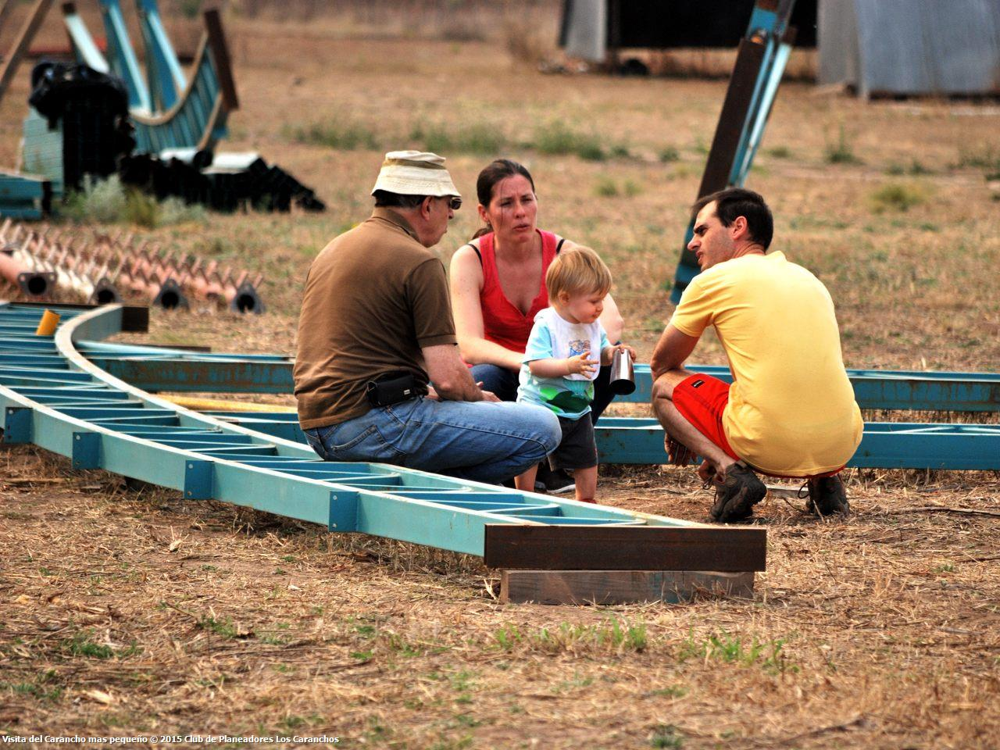
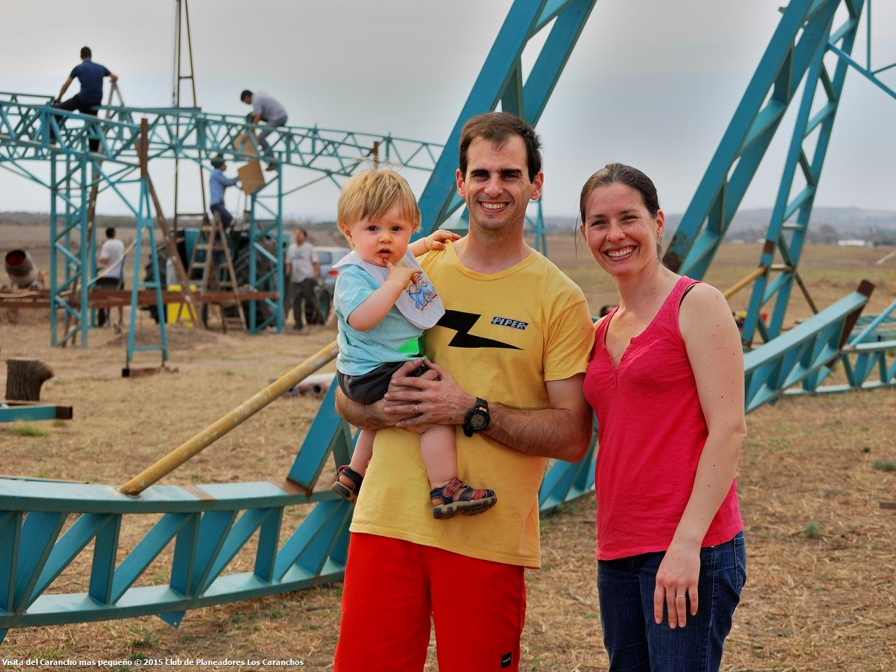
Sábado 15/08/2015- TRASLADO DEL AVIÓN REMOLCADOR
Se trajo el avión remolcador Ranquel desde la ciudad de Alta Gracia. Se agradece a a la familia de Darío Tenaguillo por haberlo guardado en su casa.
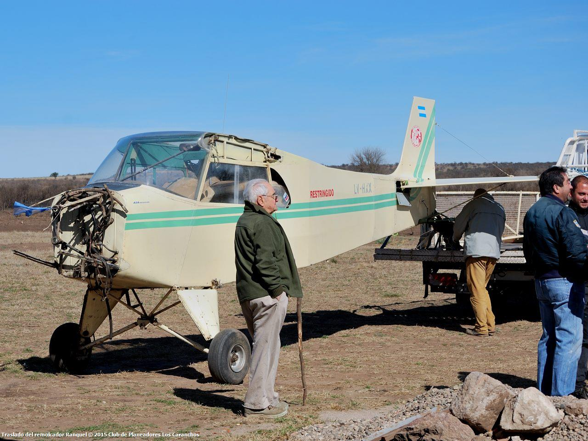
Ver más fotos del traslado del avión
Sábados 1º y 08/08/2015- MAQUINARIA PESADA PREPARANDO LA PISTA
Ingresaron la motoniveladora y la pala municipales a preparar la pista. Cuando le manifestamos al Intendente Juan Carlos Cimadamore que agradeceríamos a través de esta página web, el nos manifestó que no era necesario, pero una simple reflexión nos llevó a la conclusión de que a través de su persona agradecíamos también a toda la localidad de Despeñaderos, constituída por gente afable y educada, que nos ha recibido con los brazos abiertos, gente de quién Juan C. Cimadamore es fiel representante. Nos agrada el interés en nuestro club que nos manifiestan en todos los ámbitos de la comunidad.
MUCHAS GRACIAS A DESPEÑADEROS
MUCHAS GRACIAS A LA MUNICIPALIDAD DE DESPEÑADEROS
MUCHAS GRACIAS A SU INTENDENTE JUAN CARLOS CIMADAMORE
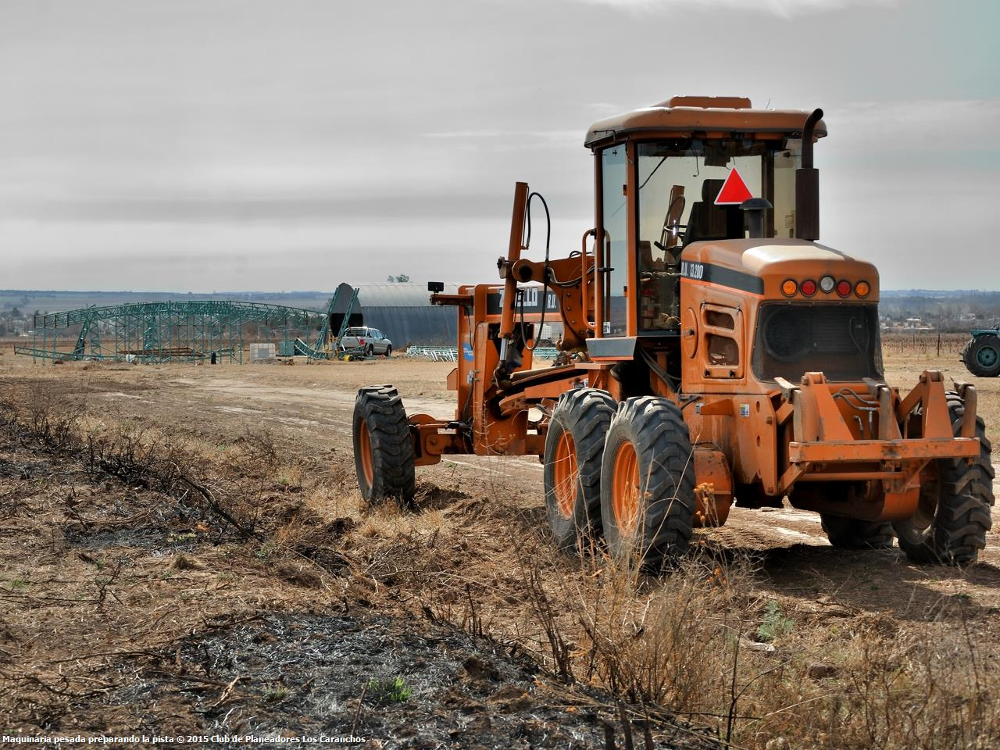
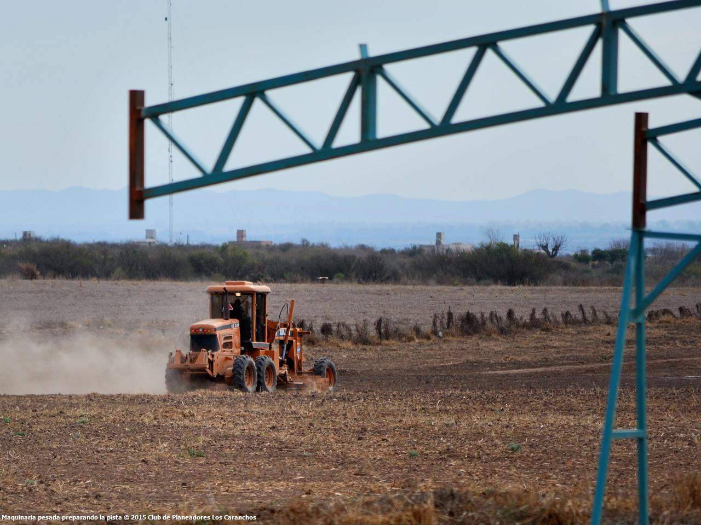


Sábado 25/07/2015- ASADO DE AGRADECIMIENTO A LOS BOMBEROS
Invitamos a los bomberos de Despeñaderos a un asado estilo "carancho" para agasajarlos en agradecimiento. Pasamos un muy lindo momento, y pudimos darnos cuenta que en realidad compartíamos la pasión por nuestras actividades.
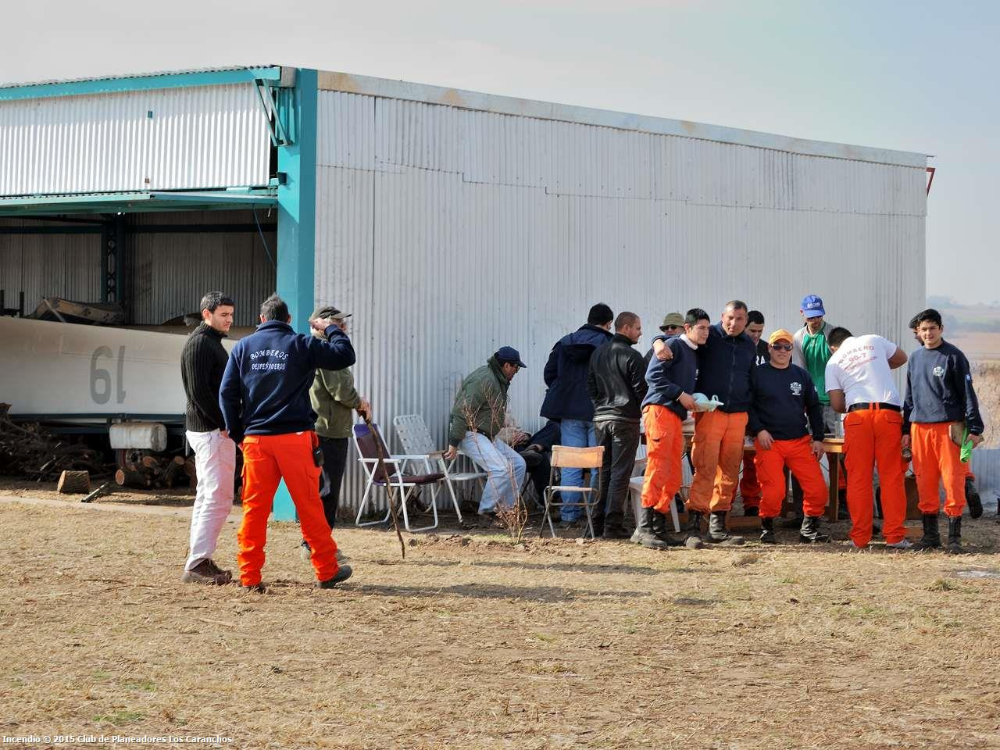
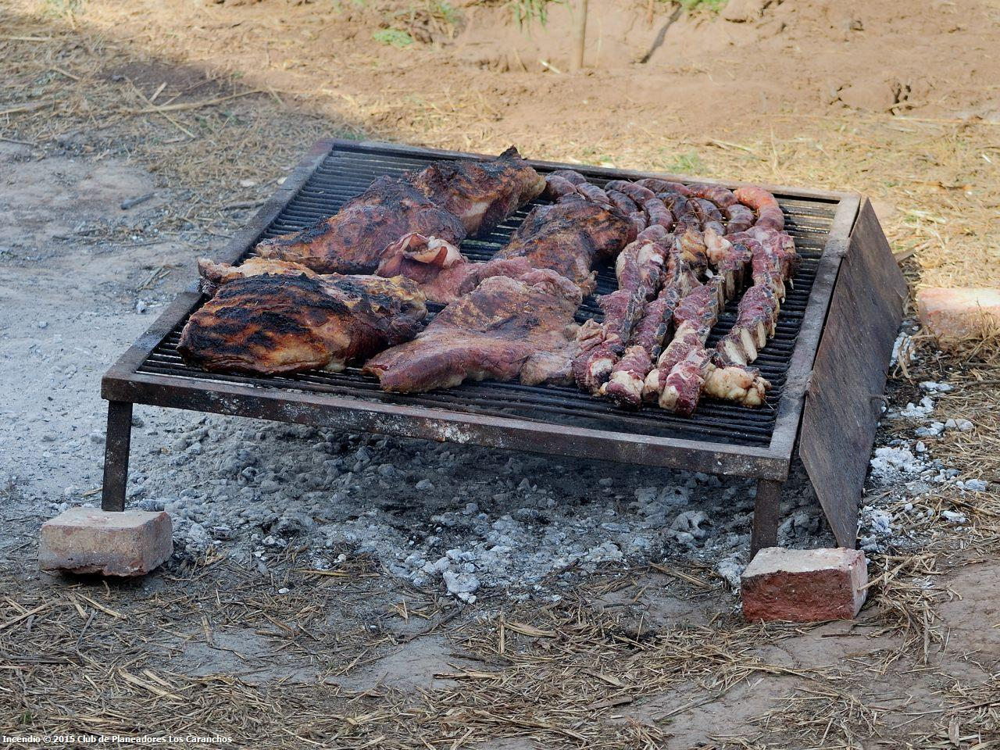
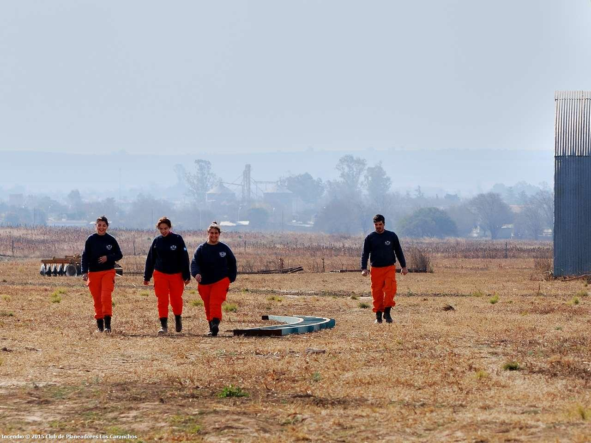
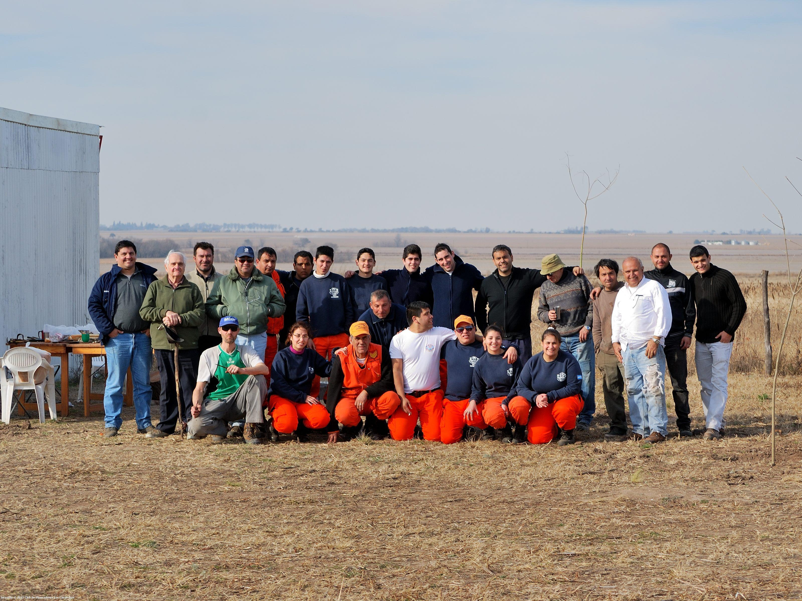
Sábado 18/07/2015- INCENDIO EN NUESTRO PREDIO
Sufrimos el incendio de parte de nuestro predio, donde abundaba la maleza. Rápidamente concurrieron los bomberos de Despeñaderos a sofocarlo y evitar que nuestras instalaciones corran riesgo. No solo apagaron el fuego, sino que se quedaron a hacer guardia de cenizas.
MUCHAS GRACIAS A LOS BOMBEROS DE DESPEÑADEROS !!!!


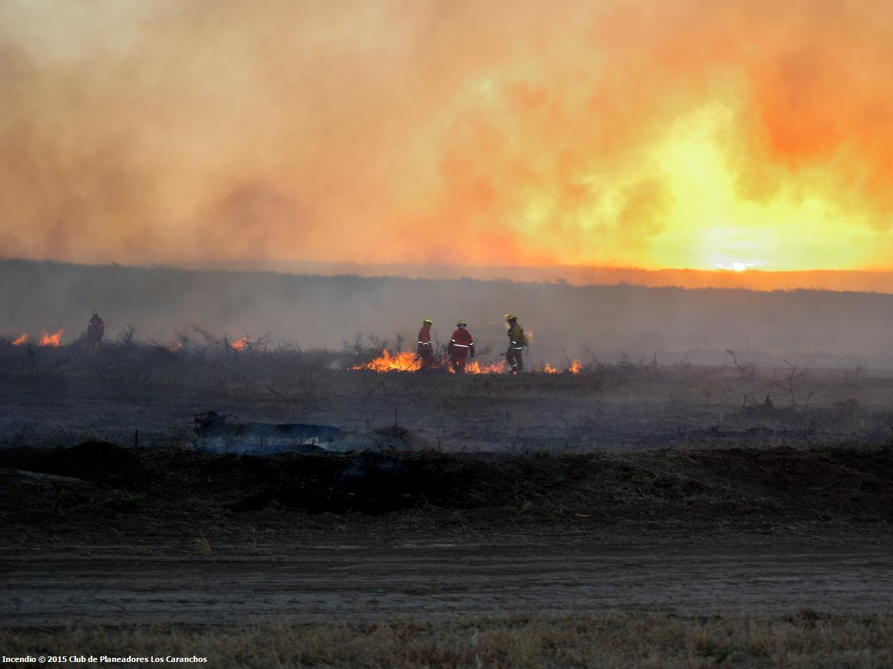
Domingo 05/07/2015- TRABAJOS EN LA PISTA
Efectuamos recolección de piedras de la pista, en las fotos se puede ver al fondo el trabajo del tractor con la rastra.

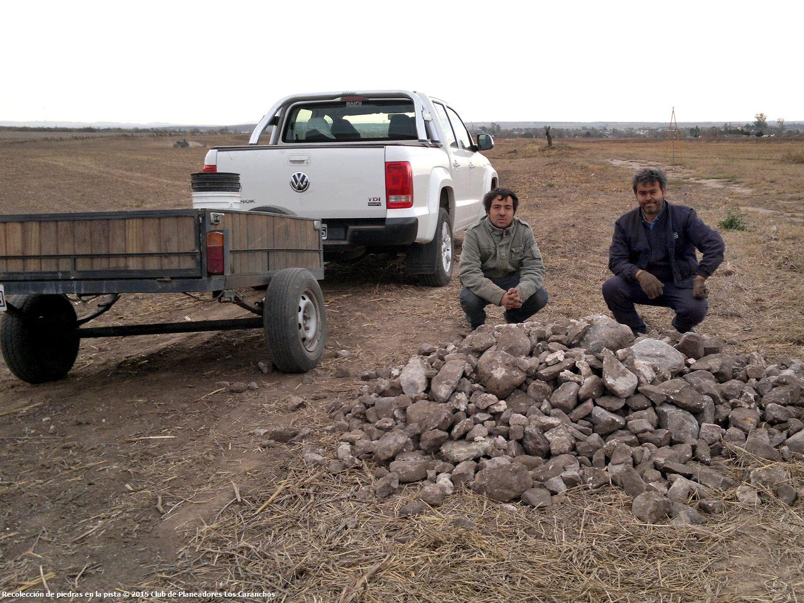
Ver mas fotos de la recolección de piedras en la pista
Sábados 06/06/2015 y 04/07/2015- FORESTACIÓN DEL CLUB
Esos dos sábados plantamos mas de 130 árboles de las variedades Fresno Americano, Fresno Dorado, Acer Buergerianum, Rhus Succedanea, Jacarandá, Aromo Francés, Palo Borracho y Roble.

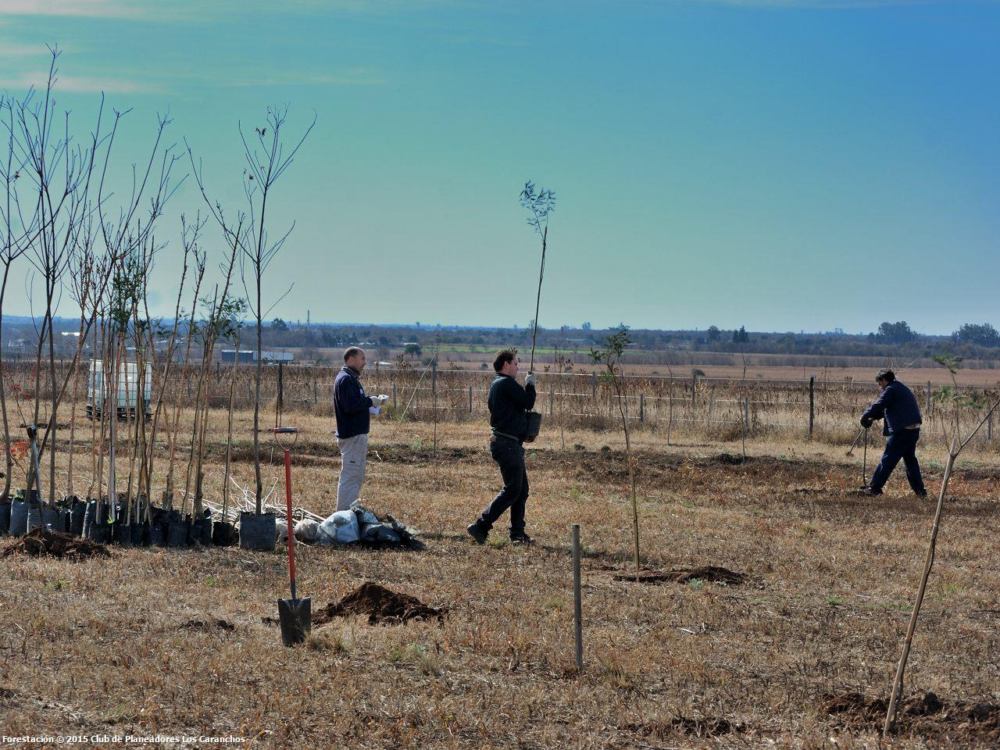
Ver mas fotos de la forestación
Sábados 06 y 13/06/2015- MONTAJE DE LAS PRIMERAS CABREADAS DEL HANGAR DE PLANEADORES
Se preparó el tractor para poder elevar las cabreadas y montarlas

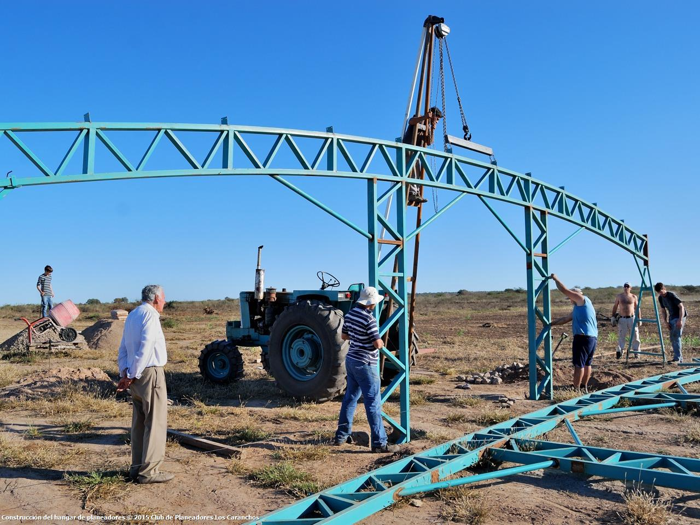
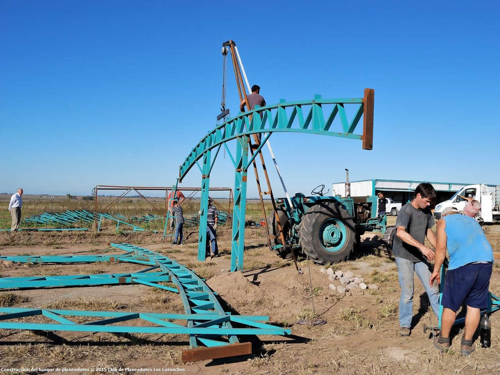

Ver mas fotos del montaje de las cabreadas
Nuevas actualizaciones en breve...
Muchas Gracias y Buen Vuelo...
Si usted tiene deseos de volar en planeador, no dude en contactarnos. Ante cualquier duda: loscaranchos@gmail.com